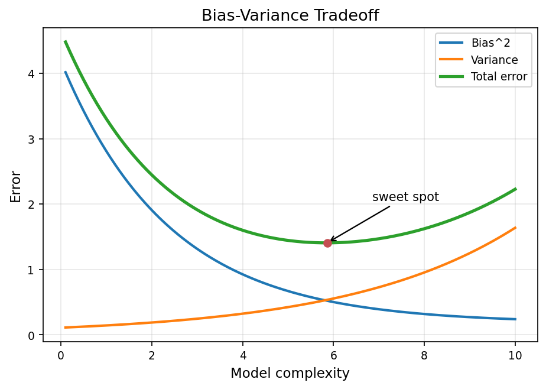
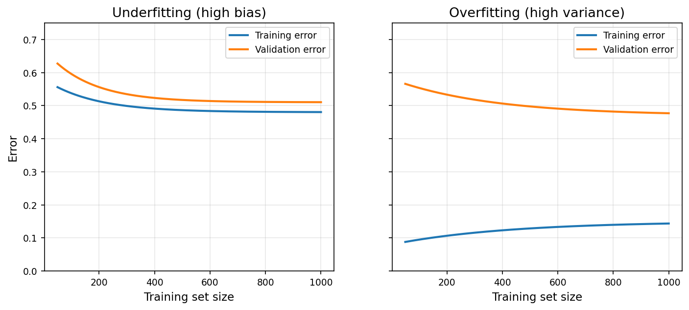
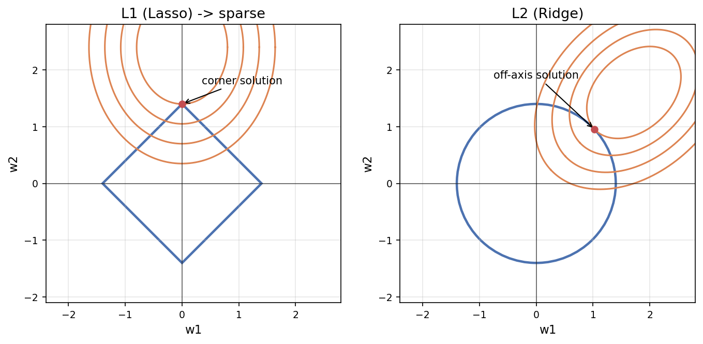

ML 面試核心觀念¶
這是一份面試導向的觀念速查——把 DS/ML 面試最高頻的八個主題整理成「核心觀念 + 程式碼 + 面試口答」。與〈Géron《Hands-On ML》Ch1–9 重點整理〉互補：那篇照書走章節，這篇照觀念打面試。
0. 一眼地圖¶
ML 三大類型（在學什麼）→ Bias-Variance（怎麼判斷學壞了）→ 梯度下降（怎麼學）→ 線性/邏輯回歸（最基本的兩個模型）→ 正則化（怎麼不過擬合）→ 樹模型家族（業界 tabular 主力）→ 交叉驗證（怎麼公正評估）→ 評估指標（用什麼數字衡量）。
1. ML 三大類型¶
- 監督式：資料有 label，學「輸入→輸出」映射。
- 回歸（連續值，指標 MAE/MSE/RMSE/R²）、分類（類別，指標 Accuracy/P/R/F1/AUC）。
- 非監督式：資料無 label，自己找模式。
- 分群（K-Means/DBSCAN）、降維（PCA/t-SNE）、關聯規則（購物籃）。
- 其他：半監督、自監督（BERT 的 masked LM）、強化學習（AlphaGo）。
🎤 面試口答
- 監督 vs 非監督：差在有沒有 label。實務 ~80% 是監督；非監督多用於 label 很貴前的探索或異常檢測。
- K-Means vs PCA：一個是分群（輸出「屬於哪群」）、一個是降維（輸出低維表示）；常先 PCA 再 K-Means。
- 應用場景：監督→金融違約預測；非監督→電商客戶分群。
2. Bias-Variance Tradeoff（最核心的判斷框架）¶
誤差分解：Total Error = Bias² + Variance + Irreducible Error
- Bias 高 = 太簡單 = underfitting（如用線性回歸擬合非線性）。
- Variance 高 = 太複雜 = overfitting（如深度 20 的決策樹背住訓練集）。
- Irreducible：資料本身雜訊，換模型也減不掉。

圖：模型複雜度上升 → Bias² 降、Variance 升，總誤差呈 U 型，最低點即 sweet spot。用 train/validation error 診斷：
| Training | Validation | 診斷 |
|---|---|---|
| 高 | 高（接近 train） | High Bias → Underfitting |
| 低 | 高（差距大） | High Variance → Overfitting |
| 低 | 低 | 好模型 |

圖：左 underfitting（train/val 都高且收斂在一起）；右 overfitting（train 低、val 高、落差大）。解法： - High Bias → 加複雜度、加特徵、降正則化、訓練更久。 - High Variance → 加資料（最有效最貴）、加正則化、簡化模型、CV 調參、Ensemble、Dropout、Early stopping。
🎤 面試口答
先看 train/val error 組合判斷：兩者都高=underfitting（加複雜度）；train 低 val 高=overfitting（先試正則化，再考慮蒐集更多資料）。
3. Gradient Descent（訓練之魂）¶
一句話：站在哪、看哪個方向最陡下坡、踏一步、重複。更新公式 θ ← θ − α·∇L(θ)（α＝learning rate，負號＝往下坡）。
三種變形： - Batch：用全部資料算一次梯度，穩但慢。 - SGD：一筆就更新，快但震盪大。 - Mini-Batch（業界標準）：一小批（32/64/128/256），能吃 GPU 平行、小震盪還能幫忙逃離 local minima。
Learning rate：太小→收斂超慢；太大→震盪甚至發散。常用起點 0.001/0.01，搭配 scheduler（先大後小）。
進階優化器：Momentum（慣性）、RMSProp（每參數自適應 lr）、Adam（=兩者結合，業界預設，99% NN 用它）。高維空間真正常見的不是 local minima 而是 saddle point。各優化器（Adagrad／RMSprop／Adam β₁β₂、SGD+Nesterov）深入見〈深度學習訓練基礎〉。
def gradient_descent(X, y, lr=0.01, epochs=1000):
w, b, n = 0, 0, len(X)
for _ in range(epochs):
y_pred = w * X + b
dw = (2/n) * np.sum((y_pred - y) * X)
db = (2/n) * np.sum(y_pred - y)
w -= lr * dw; b -= lr * db
return w, b
🎤 面試口答
- 為何往梯度反方向：梯度指向上升最快方向，要最小化 loss 就往反方向走。
- Batch/Mini/SGD：Batch 穩慢、SGD 快震盪、Mini-batch 折衷且能用 GPU，業界標準。
- 為何用 Adam：Momentum+RMSProp、自適應 lr、預設好用；但 SGD+Momentum+好 schedule 有時泛化更佳（進階）。
4. 線性回歸 vs 邏輯回歸¶
| 項目 | 線性回歸 | 邏輯回歸 |
|---|---|---|
| 任務 | 回歸 | 分類 |
| 輸出 | 連續值 | 機率 [0,1] |
| 激活 | 無 | Sigmoid / Softmax |
| 損失 | MSE | Cross-Entropy |
| 解析解 | 有 | 無（須迭代） |
- 線性回歸三假設：線性關係、樣本獨立、殘差常態 N(0,σ²)。
- 邏輯回歸：先算線性組合 z，再用 Sigmoid
σ(z)=1/(1+e⁻ᶻ)壓到 [0,1]；多元分類用 Softmax。decision boundary 是線性的（P=0.5 ⟺ w·x=0）。
🎤 面試口答
- 為何叫「回歸」：核心仍是線性回歸 z=w·x，只是再過 Sigmoid 變機率。
- 為何不能用 MSE：邏輯回歸配 MSE 損失非凸、易卡 local minima；Cross-Entropy 來自最大似然、曲面 convex、收斂有保證。
- 是線性模型嗎：是，decision boundary 線性；非線性問題要用 kernel SVM 或樹模型。
5. 正則化（L1 / L2 / 其他）¶
在 loss 加懲罰：Loss = 原損失 + λ × 參數懲罰。
- L2 (Ridge) Σwᵢ²：參數均勻縮小、不歸零；預設首選、NN 的 weight decay。
- L1 (Lasso) Σ|wᵢ|：不重要參數直接歸零（自動特徵選擇）；特徵多但少數重要時用。
- Elastic Net：L1+L2 折衷（l1_ratio），特徵數>樣本數時好用。

圖：L1（菱形）的最低損失等高線容易交在「角」上 → 某些權重歸零（稀疏）；L2（圓）通常交在非軸點。 -λ（sklearn 的 alpha）用 CV 調：太小→過擬合、太大→欠擬合。注意 LogisticRegression 用 C=1/λ，方向相反。
- 其他正則化：Dropout（NN，隨機關神經元 0.2~0.5）、Early stopping、Data Augmentation。Dropout 訓練/推論差異與 BatchNorm 細節見〈深度學習訓練基礎〉。
🎤 面試口答
- L1 vs L2 怎麼選：特徵多疑多數無用→L1（選特徵）；特徵都有貢獻→L2；不確定→L2 或 Elastic Net。
- L1 為何稀疏：幾何上 L1 可行域是菱形（角在軸上），與損失等高線最可能交在軸上 → 部分參數精確歸零。
- 為何先標準化：否則 L2 對大尺度特徵懲罰更多，懲罰變成跟尺度相關而非重要性。
6. 樹模型家族：RF / XGBoost / LightGBM¶
單棵決策樹幾乎必過擬合、不穩定，實務只當 Ensemble 的零件。兩條路線：
- Bagging（並行）→ Random Forest：許多樹各吃 bootstrap 子集 + 每節點隨機選特徵子集 → 投票/平均，降 Variance。不易過擬合、可平行、有 feature importance、預設就好用。關鍵參數
n_estimators、max_features（分類預設 √n、回歸 n/3）、max_depth。 - Boosting（串行）→ XGBoost / LightGBM / CatBoost：每棵新樹專修前面的錯誤，降 Bias。
- XGBoost：level-wise 生長、Kaggle 經典、需手動 encode 類別。
- LightGBM（業界主力）：leaf-wise 生長、比 XGBoost 快約 10×、原生支援類別變數；小資料（<10k）易過擬合。
- CatBoost：類別變數處理最佳、預設就強。
- 關鍵參數：
max_depth/num_leaves、learning_rate（小→需更多樹）、n_estimators、early_stopping_rounds（必加）、subsample/colsample_bytree（隨機性防過擬合）。
🎤 面試口答
- Bagging vs Boosting：Bagging 並行降 Variance（RF）；Boosting 串行修錯降 Bias（XGB/LGBM）。
- RF 為何不易過擬合：兩層隨機（bootstrap 樣本 + 隨機特徵子集）→ 樹間相關性低，集成後 Variance 下降。
- XGB vs LGBM：level-wise vs leaf-wise（每次分裂減損最多的葉）；leaf-wise 通常更準更快，小資料易過擬合。實務先 LGBM 再 Optuna 調參。
- 類別變數處理：One-hot / Label / Target Encoding；CatBoost 原生最佳。
7. Cross-Validation（交叉驗證）¶
單次切 train/test 受切分運氣影響大、小資料尤甚。K-Fold：切 K 份（常 5/10），輪流 1 份驗證其餘訓練，取平均。
變形： - Stratified K-Fold：保持每折類別比例 → 分類/imbalanced 首選。 - TimeSeriesSplit：時序不能用未來預測過去，只能過去→未來。 - Group K-Fold：同組（如同一病人多筆）須在同一折。 - LOO：K=N，成本高、少用。
⚠️ 最常見的 Data Leakage：在 CV 前就用全部資料做標準化/特徵選擇。正解是用 Pipeline 把前處理+模型包起來，讓每折各自 fit：
pipe = Pipeline([('scaler', StandardScaler()), ('model', LogisticRegression())])
scores = cross_val_score(pipe, X, y, cv=StratifiedKFold(5, shuffle=True, random_state=42))
🎤 面試口答
- 為何用 CV / 用哪種：避免單次切分的運氣；最常 5-Fold，分類用 Stratified，時序用 TimeSeriesSplit。
- Data Leakage：訓練不當用到驗證/測試資訊（典型：CV 前全量標準化）；用 Pipeline 讓每折分開處理。
- K 選多少：5 或 10；資料少 K 設大（如 1000 筆用 10-Fold）。
- 選超參數+評估別用同一份：用 train/val/test 三切或 nested CV。
8. 評估指標全整理¶
分類：從混淆矩陣出發¶
TP/TN 對；FP＝誤報、FN＝漏報。
- Accuracy (TP+TN)/All：imbalanced 有陷阱（全猜多數類也高分）。
- Precision TP/(TP+FP)：「我說是正的有多少真的是」→ 誤報成本高用（垃圾郵件）。
- Recall TP/(TP+FN)：「真正的正抓到多少」→ 漏報成本高用（癌症篩檢）。
- F1 ＝ P/R 調和平均（兩個都高才高）→ imbalanced 首選。
- ROC-AUC：排序能力、與 threshold 無關（0.5 亂猜、1.0 完美）→ imbalanced 評估最常用。
| 情境 | 指標 |
|---|---|
| 平衡資料 | Accuracy |
| 不平衡 | F1、AUC |
| 漏報成本高（診斷/詐騙） | Recall |
| 誤報成本高（垃圾郵件/推薦） | Precision |
| 排名/機率 | AUC |
回歸¶
- MAE：絕對誤差、對 outlier 不敏感。
- MSE：平方誤差、重罰 outlier、常當訓練損失。
- RMSE：MSE 開根號、單位同 y、報告最常用。
- R²：解釋多少 % 變異（≤1，可負）。
- MAPE：百分比誤差、業務友善，但 y 有 0 會爆。
from sklearn.metrics import classification_report, roc_auc_score
print(classification_report(y_true, y_pred))
auc = roc_auc_score(y_true, y_pred_proba) # 注意要用機率
🎤 面試口答
- P vs R：誤報貴用 Precision、漏報貴用 Recall、都重要看 F1。
- imbalanced 不能用 Accuracy：99% 健康全猜健康也 99%；看 F1/AUC 才露出沒學到少數類。
- AUC vs Accuracy：AUC 是排序能力、與 threshold 無關；Accuracy 隨 threshold 變動。開發看 AUC，部署再依情境定 threshold。
- 口訣：Accuracy 看全局、Precision 看抓得準、Recall 看抓得全、F1 調和、AUC 看排序。